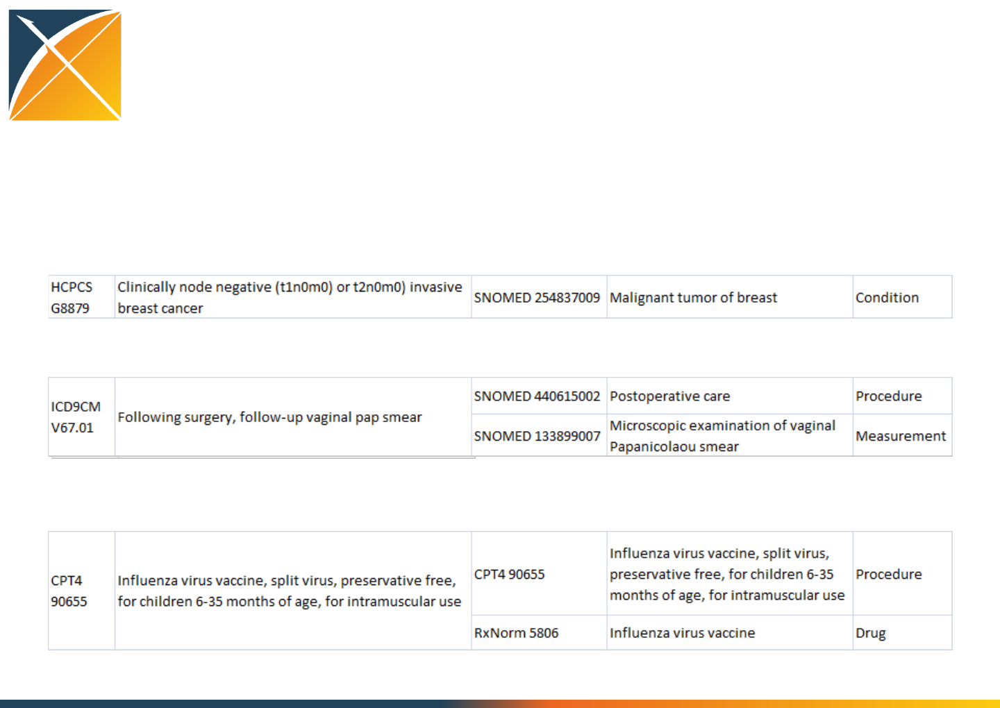

Vocabulary tutorial
Theory, principles, and practical
applications
OHDSI Symposium 2016
Everything is a concept….everything needs to be
defined in a common language

OHDSI Approach
•Comprehensive
–All of medicine and the entire world
•Don’t create yet another vocabulary
1. Select vocabularies
2. Map among vocabularies
3. Exploit existing classification hierarchies

Domains
•Condition
•Currency
•Device
•Drug
•Ethnicity
•Gender
•Measurement
•Measurement Value
•Measurement Value Operator
•Metadata
•Modifier
•Observation
•Place of Service
•Procedure
•Provider Specialty
•Race
•Relationship
•Revenue Code
•Route Of Administration
•Specimen
•Specimen Anatomic Site
•Specimen Disease Status
•Type Concept
•Unit
•Visit
•Combination Domains
HCPCS
CPT4
ICD10
ICD9CM
GPI
MedDRA
Read
SNOMED 624,965
NDC
Drug
Condition
Procedure
Observation
Device
395,822
98,021
96,494
Distribution of Domains in Vocabularies
OHDSI Approach
Classification
hierarchies
Standard terms
Non-standard
source terms
Original patient data
OHDSI
database
CONDITION_OCCURENCE table
condition_concept_id
condition_type_concept_id
condition_source_value
condition_source_concept_id
Original patient data
ICD9CM “250.01”
ICD9CM “250.01”
OMOP “44820682“ (ICD9CM 250.01)
OMOP “201254” (SNOMED 46635009)
Semantic Consolidation
in UMLS vs in OHDSI
UMLS
Concept with
CUI
ICD9CM
SNOMED
ICD10CM
ICD10
MeSH
ICD9CM
SNOMED
ICD10CM
ICD10
MeSH
One well-defined code from
one vocabulary becomes the
Standard Concept
A separate and
independent
UMLS concept
represents the
meaning

Standard terms: mapping
•Existing maps
–NDC to RxNorm
–ICD-9-CM to SNOMED
–SNOMED to MedDRA
–CPT-4 to SNOMED
–Read to SNOMED
–ICD-9-Proc to SNOMED
–ICD-9-Proc, CPT-4 and HCPCS to RxNorm
(procedure drugs)
–ICD-10-CM to SNOMED
–DPD to RxNorm/Extension
•Working on
–ICD10PCS to SNOMED
–DM+D to RxNorm/Extension
–Gemscript to RxNorm/Extension
–AMIS to RxNorm/Extension
–JDBC to RxNorm/Extension
–Other national drug schemes to RxNorm/E
–Other national ICD-10 dialects to SNOMED
–HCPCS to all sorts of things
–Units to UCUM
•Need
–OCPS-4 to SNOMED
–Comprehensive CPT-4, LOINC, OCPS-4 and
HCPCS to SNOMED
9
For every code that exists there is a map to a Standard
Concept (including 0 if no useful mapping is possible)

Standard terms: one domain
For every Standard Concept exists one Domain
Non-standard ones can be multi-Domain

Standard terms: no duplicates
–Drug: easy unique combination of ingredient, strength, form, and we got
RxNorm, but
•Forms are not unambiguous
•Ingredients are easy for patented drugs, but hard for herbal, traditional, excipients, etc
•Strength is not uniform (%, vol-%, g%, mg/dL)
•RxNorm is US-only
–Conditions, lab tests: harder
•SNOMED is trying, but
–Duplications (4 times "Leukemic infiltration of skin")
–Constant churn of introduction and deprecation
–Local SNOMEDs don't help
•LOINC good for clinical labs, too detailed for clinicians and researchers
–Procedures, observations: hardest
•Procedure code systems not comprehensive, cross-links between procedures sporadic and
unreliable
•Observations: Wild West
–Specialties, place of service: Messy
–Devices, disposables: Impossible
11
For every medical entity (condition, drug, procedure etc),
there is only one Standard Concept
Authoring and maintenance require the
classification hierarchy
Infection
Lung infection
Pneumonia
Lobar pneumonia
GI infect
Pleural inf

Hierarchy
–Drug: Well established and clinically used drug classes, but
•No authority or agreement what falls under
•Many parallel classification systems
•Many drugs not covered
•RxNorm has no classes
–Conditions, Procedures, Tests:
•SNOMED is trying, but sometimes contorted lattice
–Between "Neoplasm and/or hamartoma" and "Suprasellar germ cell tumor"
are 3 to 11 levels of separation
•MedDRA easy to use, but duplications and overlaps
–"Non-site specific gastrointestinal haemorrhages", "Gastrointestinal
haemorrhages"
•CPT4: 252 codes have no hierarchical connections
–Observations, Devices
•No meaningful hierarchies
13
For every medical domain (condition, drug, procedure
etc), there is a comprehensive hierarchy

Maintenance
•Long list of codes is hard to maintain
•312327, 319039, 434376, 436706, 438170, 438438, 438447, 441579, 444406,
4011131, 4051874, 4108669, 4119456, 4119457, 4119943, 4119944, 4119945,
4119946, 4119947, 4119948, 4121464, 4121465, 4121466, 4124684, 4124685,
4126801, 4145721, 4147223, 4151046, 4178129, 4243372, 4267568, 4270024,
4275436, 4296653, 4303359, 4324413, 43020460, 43020461, 44782712,
44782769, 45766075, 45766076, 45766115, 45766116, 45766150, 45766151,
45771322, 46270158, 46270159, 46270160, 46270161, 46270162, 46270163,
46270164, 46273495, 46274044
•Shorter list of classes that include many codes
in the hierarchy
–312327 (SNOMED 57054005 = Acute myocardial infarction)

How well did I do?
1. Get the codes right
–Myocardial infarction 410.00, 410.01, 410.02, …
2. Get the cohort right
–Patient #234, #546, #768, …
•“All these extra codes”
•“Just missing one code”
3. Get the analytic result right
–Statistical association with drug X
Vocabulary classifications improve your
efficiency....and your quality
•60% of medication codes and 94% of records are mapped
•45% of opiate codes that are covered by one of ATC, ETC,
or NDF-RT are covered by all three
•15% missed by at least one
•No one classification scheme was better than the others
•Without classification it is hopeless
•Consider using multiple classifications
If we try to speak the same language,
will there be loss in translation?
1. Changing language may change your codelist, that
may change your cohort depending on the disease
2. But in practice, running an
estimation analysis using source vs.
standard vocabulary yields the same
result

Lessons
•Use classes to ease maintenance
–Enumerate the classes’ codes and review
•Easier to figure out what added than what
missed
–Classes help
•Use standard terms
–Some loss, but some gain and can be used
elsewhere